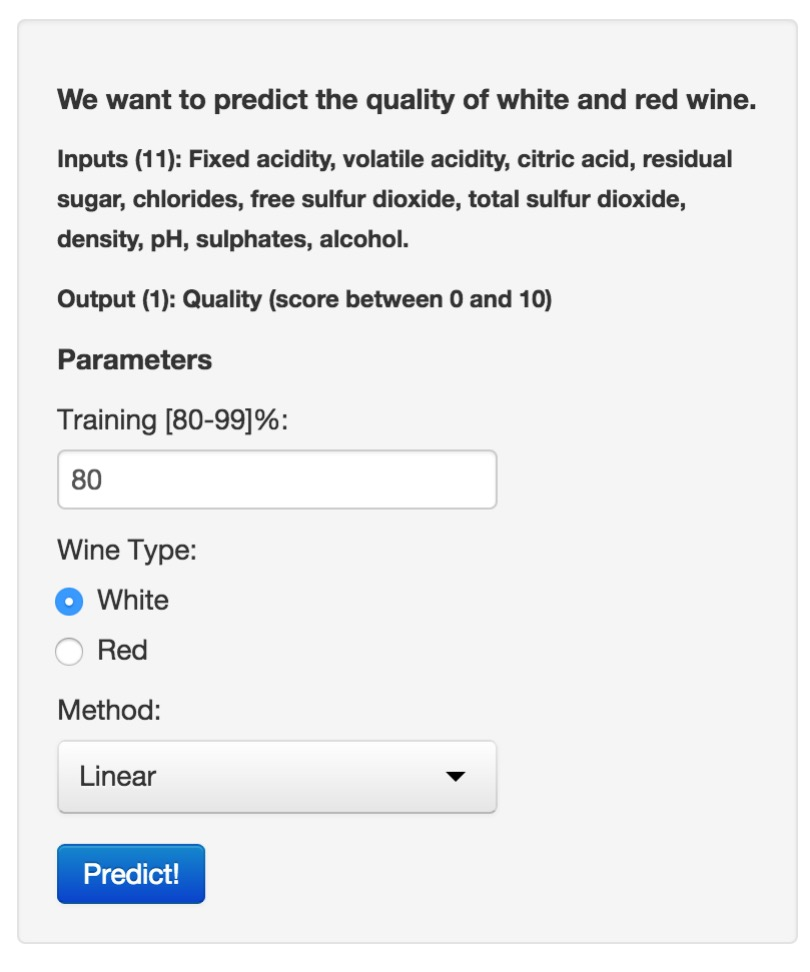

Description: A company hired me to do the analysis of the quality of White and Red wines of a particular crop in Portugual. However, I am no expert wine. Thus a way that I got to solve the problem was to collect real data of characteristics related to quality of wines. From these data I was able to create an online application that can extrapolate and predict the quality of Portuguese wine.
Data:
- Input consists of 11 variables. fixed acidity, volatile acidity, citric acid, residual sugar, chlorides, free sulfur dioxide, total sulfur dioxide, density, pH, sulphates and alcohol.
- Output consists of qualify of Wine with score between 0 to 10.
Wine Quality Predictor App
Presentation
Diego Marinho de Oliveira
Data Scientist
Problem
Wine Quality Predictor App

The Wine Quality Predictor App is composed of two parts, the first is the interactive panel and the second is the result panel.
At the interactive panel we can adjust some parameters to better tunning our prediction model. The parameters are the training percentage size, wine type and the method to fit the data.
To generate and evaluate the predictor with the new parameters, please click in 'Predict!'.
Understand Results
- The results are shown in the graph panel two. As can be seen there is a line with the description of the parameters entered and then one graph. The graph shows the result of quality wine predicted vs. observed. The ideal is \(x_{i} = y_{i}\) for all \(x_{i} \in X\) and \(y_{i} \in Y\).

Did you see the R expression be evaluated?
a <- 0.5; b <- 5; x <- 1:10;
y <- a * x + b
print (y)
## [1] 5.5 6.0 6.5 7.0 7.5 8.0 8.5 9.0 9.5 10.0
- Yes
- I don't know
- No
You need only to answer it.
This only a iterative test.